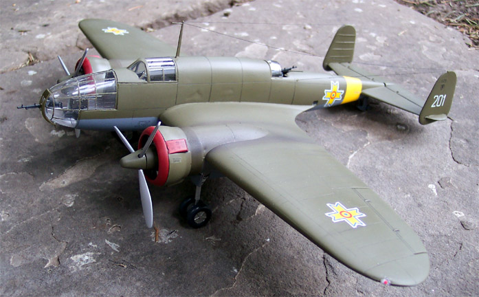
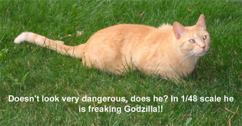
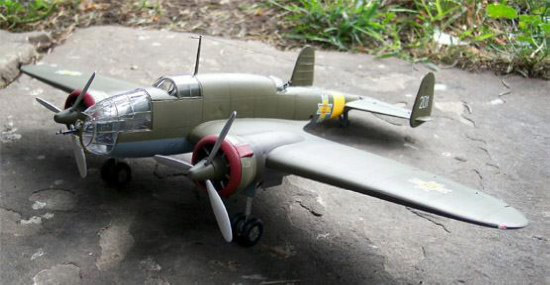
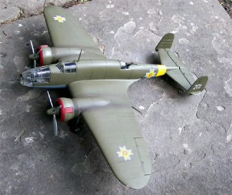

Mirage 1/48 Scale PZL 37 Los� B
Kit #48132 MSRP $45.98
Model, images and text Copyright � 2003 by Matt Swan
 This kit has been a real nightmare. Upon opening the box it looks very exciting with several trees of parts, a thick instruction booklet and large sheet of decals. There is a large tree of clear injection molded parts that are nice and clear. The instructions show a lot of interior detail pieces that are included with the kit. It only goes downhill from here.
The instructions do not have any English sections at all; you must try to decipher the pictures, which, fortunately, there are plenty of. The color charts are in Polish so you need to find a translator to figure out what your colors are going to be. I suggest going to modeling forums and asking for help there but I will include an English translation of the colors at the end of this review.
All of the large pieces have the dreaded orange peel effect on their surfaces. The wings and fuselage need to be sanded prior to any construction. Mine also had a large casting imperfection on the left side fuselage. The panel lines are engrave but there is an oddity here. On the left wing root there are traction strips that are engraved but on the right wing root they are raised, hmmmm. Like most kits coming out of the Czech republic area, there are no locator holes, which is probably a blessing because the parts don�t want to line up quite right. I opted for lining up the panel lines and filling and/or trimming the ends of the wings and fuselage to meet. The interior is where I ran into some serious parts fit issues. The main floorboard just does not fit. I had to sand it down quite a bit before it would fit into the fuselage and the nose gunners station had to be sliced up and reconstructed to fit properly. The dashboard is very difficult to install. I diverted from the instructions and attached it to the underside of the clear canopy then installed that piece onto the fuselage. The gunners stations in the ventral and dorsal positions do not fit well at all. For both gun positions the directions seem to indicate that one side of the gun mount should be attached to the fuselage side and when the fuselage gets closed up everything will meet - yeah, right. After a few dry fittings it was apparent that this was not going to work. The spacing for the lower gun was too wide so the opposite end would be hanging in space while the other position was just the opposite and had a spring effect. I opted to close the fuselage without the guns in place then position them with tweezers afterwards and secure them with superglue.
The nose is and interesting assembly also. It consists of three different clear parts, a left and a right side along with an armored piece for the nose gun to slide through. The left and right pieces do have the seam located inside the framing so there is hope for being able to clean it up and make it look presentable. There is no mask set available for this kit and there is a hell of a lot of glass. I spent several days just masking thing off. The ventral gun position must be cut open and the port side gunner�s window has to be cut out also. The manufacture does not provide a clear piece for this window and you must make it yourself, I used some clear card that some Testors sand paper was packaged in.
After getting all the glazing masked I kind of lost interest in the kit, maybe I just didn�t feel like abusing myself any more for the time being. Either way the kit got put aside for a while during which time it experienced a cat-astrophy. Well, that was just great! Now I had to go back and fix stuff and the whole project was set even further back.
The kit has options for the bomb bays to be open or closed, I chose open and that really opened a can of worms. The racks, bombs and doors don�t fit for a hill of beans. I had to use huge gobs of superglue inside the wing to attach the bombs, which, luckily, can�t be seen when complete. The individual doors (and there�s a lot of them) do not fit properly into the slots. Take my advice � if you chose to build this kit leave those bomb doors closed!
 
Painting was pretty straight forward, using Testors flat gray for the underside and Testors Olive overtop. The red rings were custom mixed with Testors flat red and some Testors rust blended in. After the paint had plenty of time to cure the kit was sealed with Future Floor wax and the decals and weathering were completed. I used my favorite � Polly Scale Clear Flat to topcoat everything and the added the antennae wires using invisible thread painted black. The curse of the Los� B was not done with me yet, the next day one of the wires drooped for no apparent reason. I had to get out the blow-dryer and tighten up the antennae wires.
There you have it, one completed PZL 37 Los� B, I�ll never do another one of these kits, ever!
Stalowy = Aluminum
Gunmetal = Gunmetal
Rdzawy = Rust
Kolor Gumy = Black Grey
Szary = Steel Grey
Szary Ciemny = Dark Grey
Kolor Plotna = Khaki Drill � a brownish khaki
Czarny Metaliczny = Metallic Black
Kolor Skory = Service Brown � this is a dark, dark brown
Srebrny = Silver
Zolty = Lemon Yellow
Niebieski Jasny = Sea Blue
Blekitny = Aircraft Blue
Khaki Polski = Khaki
Don�t blame me for any misspellings on the Polish, I�m just copying what is on the kit instructions.